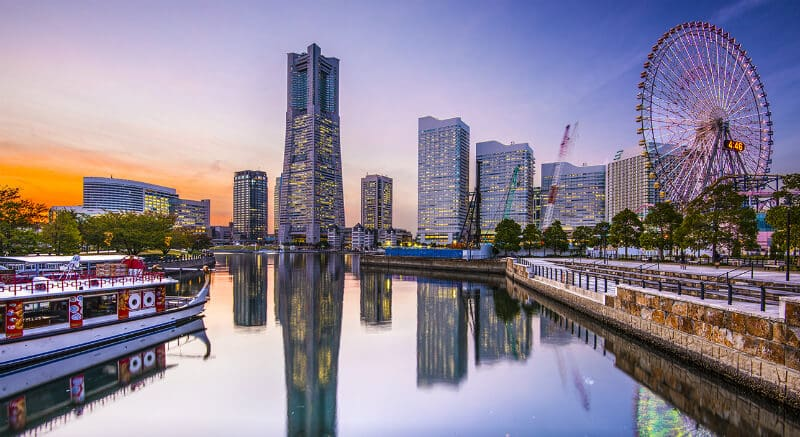
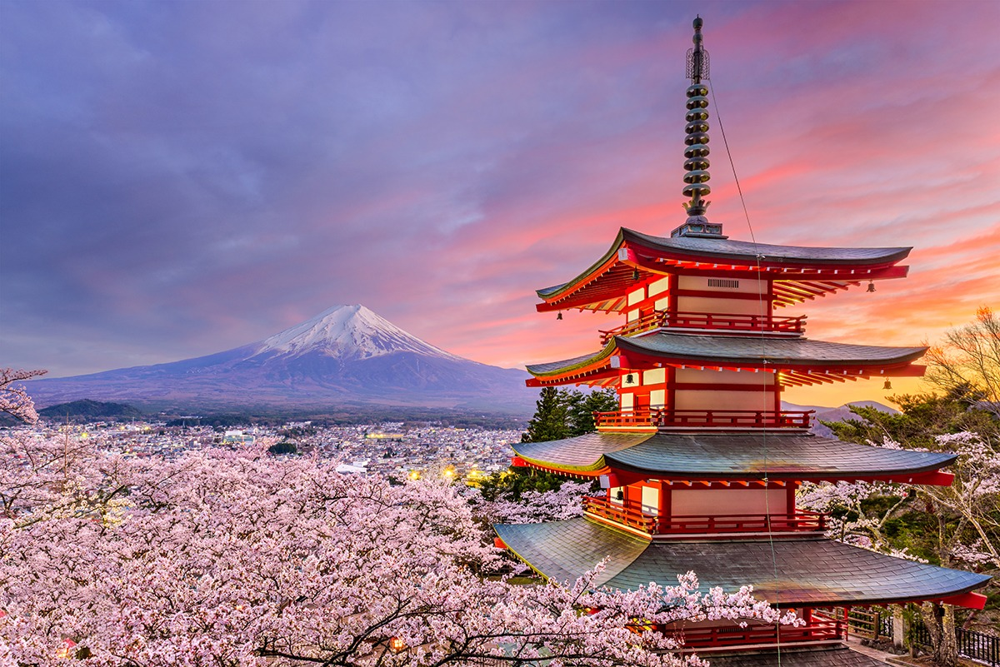
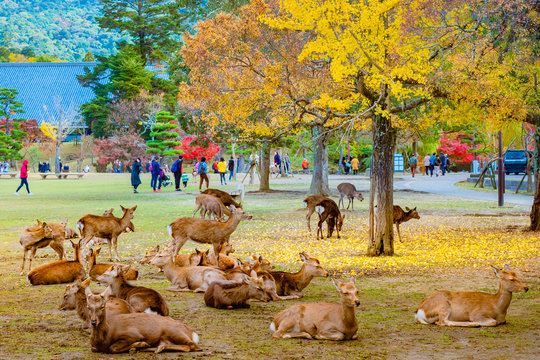
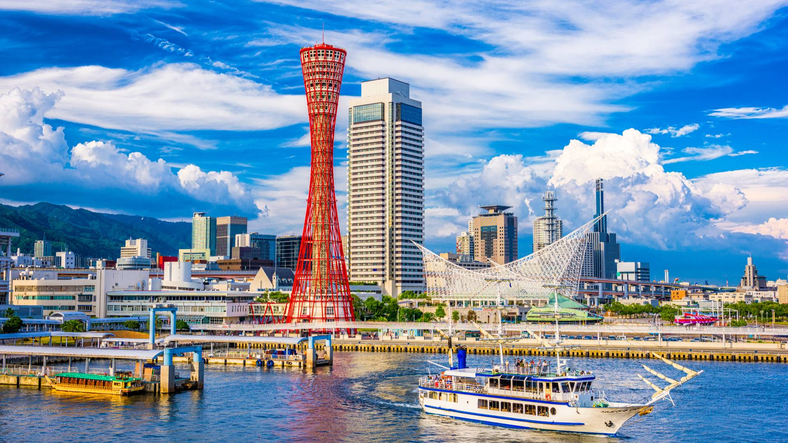

Tokyo
Tokyo, a capital do Japão, é uma metrópole vibrante onde a tradição e a modernidade coexistem de maneira harmoniosa. A cidade oferece uma rica tapeçaria de experiências, desde templos históricos como o Sensō-ji e o Palácio Imperial, até bairros futuristas como Shibuya e Shinjuku. Conhecida por sua gastronomia de renome mundial, Tóquio encanta com restaurantes Michelin e mercados de frutos do mar frescos. A cidade também é um epicentro de cultura, moda e tecnologia, com museus de classe mundial, teatros tradicionais e uma próspera cena de anime e manga. Tóquio é uma cidade onde o passado e o futuro se encontram, proporcionando uma experiência inesquecível aos seus visitantes.

Yokohama
Yokohama, a segunda maior cidade do Japão, é um porto cosmopolita que combina charme histórico com inovação moderna. Conhecida por seu icônico distrito de Minato Mirai, a cidade oferece vistas deslumbrantes do mar, além de atrações como a Kishamichi Promenade e o Osanbashi Hall. Yokohama é famosa por sua cena gastronômica diversificada, incluindo a autêntica culinária chinesa do bairro de Chinatown. A cidade também se destaca por sua rica herança cultural, com museus, parques temáticos e festivais tradicionais. Com uma mistura única de história e modernidade, Yokohama é um destino fascinante que cativa todos os visitantes.
Fujikawaguchiko
Fujikawaguchiko, localizada na província de Yamanashi, é uma pitoresca cidade que serve como um dos melhores pontos de acesso para admirar o icônico Monte Fuji. Situada às margens do belo Lago Kawaguchi, a cidade oferece vistas deslumbrantes da montanha, especialmente durante a primavera, quando as cerejeiras florescem, e no outono, quando as folhas mudam de cor. Além das paisagens deslumbrantes, Fujikawaguchiko é famosa por suas relaxantes onsen e pelo Museu de Arte Itchiku Kubota, que exibe intricados quimonos de seda. A cidade também é um excelente ponto de partida para atividades ao ar livre, como caminhadas, passeios de barco no lago e visitas às cavernas de lava. Com sua combinação de beleza natural, cultura e lazer, Fujikawaguchiko é um destino imperdível para quem deseja explorar a majestade do Monte Fuji.
Osaka
Osaka, a terceira maior cidade do Japão, é conhecida por sua rica cultura urbana e sua culinária excepcional. Situada na região de Kansai, Osaka combina a modernidade de arranha-céus e centros comerciais com a tradição de templos e santuários históricos. A cidade é famosa por suas delícias gastronômicas, como takoyaki e okonomiyaki, e por seus animados distritos de entretenimento, como Dotonbori, repletos de neon e vida noturna. Com importantes marcos como o Castelo de Osaka e o aquário Kaiyukan, além de ser um importante centro de negócios e comércio, Osaka oferece uma experiência dinâmica e acolhedora, refletindo a hospitalidade calorosa de seus habitantes.

Nara
A província de Nara, no Japão, é um fascinante centro de história e cultura, conhecida por suas atrações históricas e naturais. A cidade de Nara, a primeira capital permanente do Japão, é repleta de vestígios do passado imperial, incluindo o histórico Parque de Nara. Nara também é famosa pelo Museu Nacional de Nara, que exibe uma vasta coleção de arte budista. A poucos quilômetros, Asuka destaca-se por suas antigas ruínas e tumbas, incluindo o Asuka-dera, o primeiro templo budista do Japão. Asuka também é conhecida por suas técnicas de agricultura tradicionais e pela paisagem rural pitoresca que preserva a estética do Japão antigo. Juntas, Nara e Asuka oferecem uma profunda imersão na rica história e cultura japonesa, refletindo o esplendor da era antiga do país.
Kōbe
Kōbe, uma das cidades mais encantadoras do Japão, é famosa por sua mistura de beleza natural e urbanidade moderna. Localizada entre o mar e as montanhas, Kōbe oferece uma rica variedade de experiências, desde o icônico Porto de Kōbe até o sereno Monte Rokko. A cidade é conhecida mundialmente por sua carne de Kōbe, uma iguaria gourmet apreciada por chefs do mundo todo. Kōbe também possui uma vibrante cena cultural, com museus como o Museu da Cidade de Kōbe e o Museu Marítimo de Kōbe, além de eventos tradicionais como o Festival de Luminarie. Com seus bairros cosmopolitas, como Kitano, e sua hospitalidade calorosa, Kōbe é uma cidade que encanta e acolhe todos os visitantes, proporcionando memórias inesquecíveis.
Kyoto
Kyoto, antiga capital imperial do Japão, é uma cidade rica em história e cultura. Conhecida por seus inúmeros templos budistas, santuários xintoístas, jardins tradicionais e palácios imperiais, Kyoto oferece uma janela para o passado do Japão. Maravilhas como o Templo Kinkaku-ji - Pavilhão Dourado, o Templo Fushimi Inari com seus milhares de torii vermelhos e o Castelo Nijo são imperdíveis. As ruas de Gion, o famoso distrito de gueixas, são encantadoras com suas casas de chá e arquitetura tradicional. Kyoto também é famosa por suas cerimônias de chá e festivais sazonais, que destacam a beleza das flores de cerejeira na primavera e as folhas vermelhas no outono. É uma cidade onde a herança cultural do Japão é preservada e celebrada em cada esquina.

Nagano
Nagano, situada no coração das montanhas japonesas, é uma cidade que combina beleza natural com uma rica herança cultural. Conhecida por ter sediado os Jogos Olímpicos de Inverno de 1998, Nagano é um destino popular para entusiastas de esportes de inverno, oferecendo excelentes pistas de esqui e snowboard. Uma das atrações mais famosas da região é o Snow Monkey Park, onde os visitantes podem observar macacos japoneses se banhando nas fontes termais naturais. A cidade também abriga o venerado Templo Zenko-ji, um dos mais importantes do Japão, e diversos onsen relaxantes. Com sua paisagem montanhosa deslumbrante e diversas atividades ao ar livre, Nagano é um destino que oferece uma experiência autêntica e inesquecível no Japão.